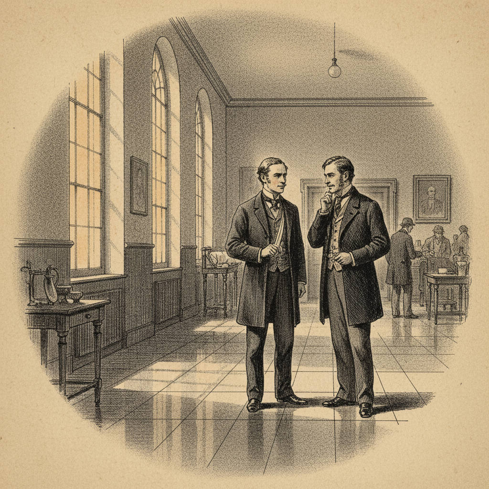
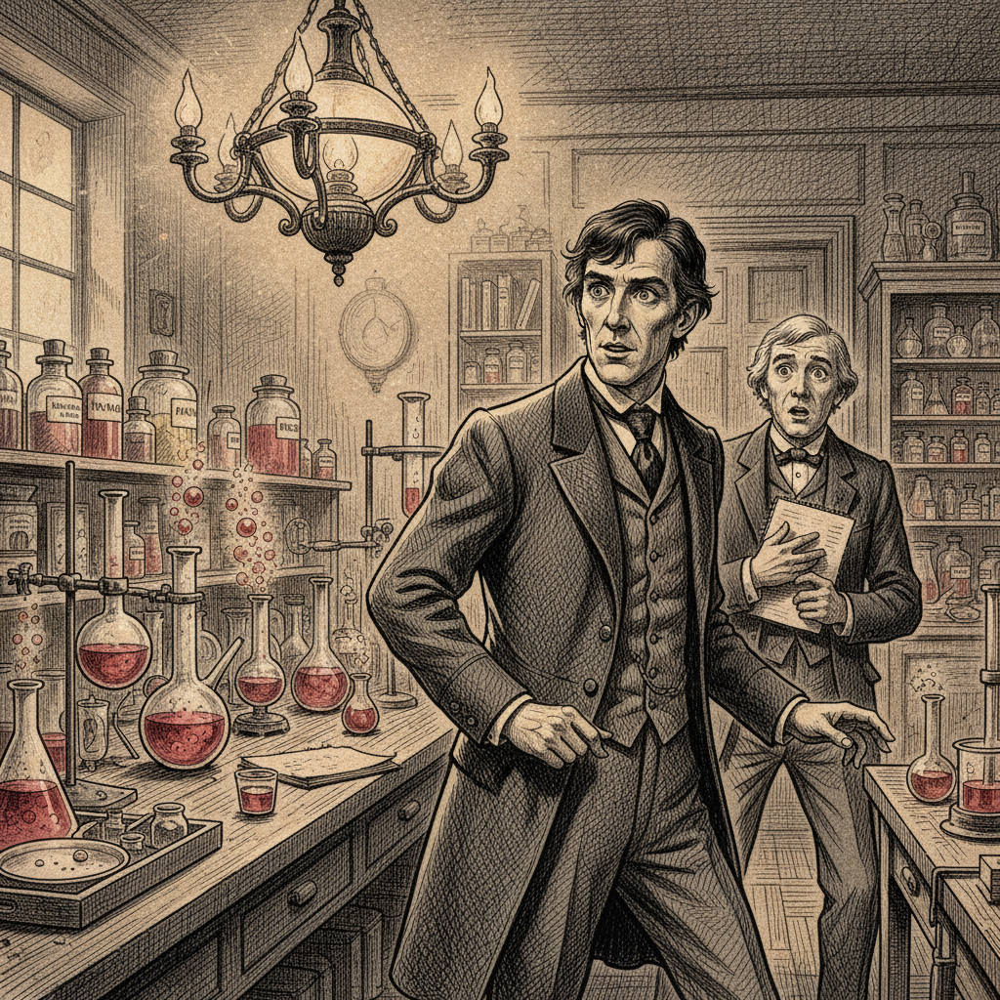
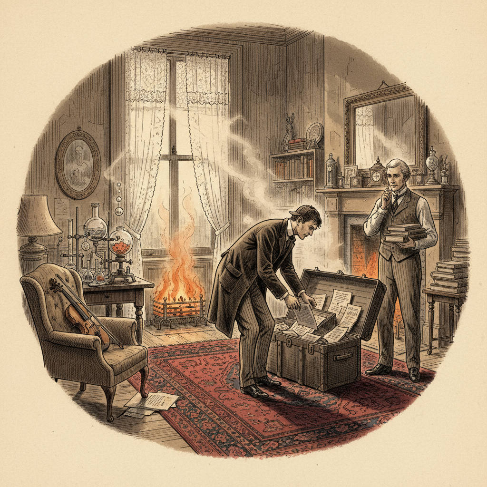
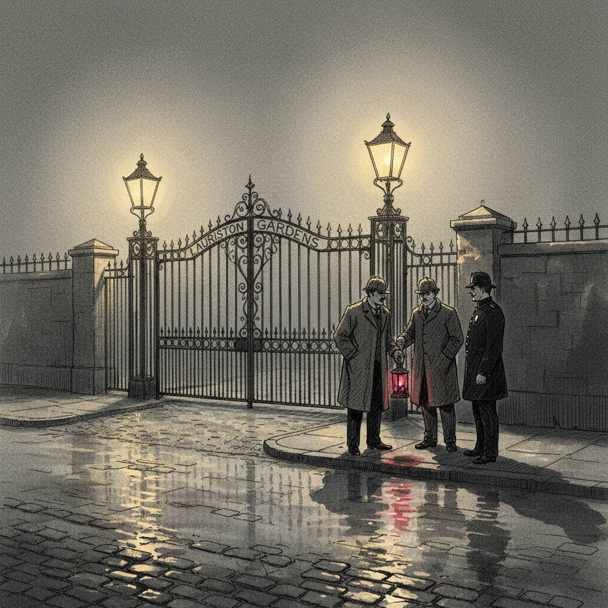

A Surgeon Returned
"I had neither kith nor kin in England, and was therefore as free as air."
Dr. Watson returns to London after serving in Afghanistan, seeking affordable lodging and companionship.

Meeting Stamford
"You must meet him… He is a little queer in his ideas."
At St. Bartholomew's Hospital, Watson's old acquaintance Stamford suggests a potential roommate.

The Chemistry Lab and Deduction
"You have been in Afghanistan, I perceive."
Watson meets Sherlock Holmes in a chemistry lab, where Holmes demonstrates his remarkable deductive abilities.

Baker Street, 221B
"We entered a lofty sitting-room…"
Holmes and Watson settle into their famous Baker Street lodgings, complete with violin and chemical experiments.

A Case at Lauriston Gardens
"A case of considerable interest has been placed in my hands."
Detectives Lestrade and Gregson seek Holmes's assistance with a mysterious murder in an empty house.